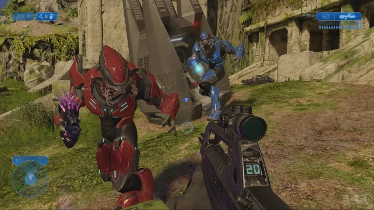
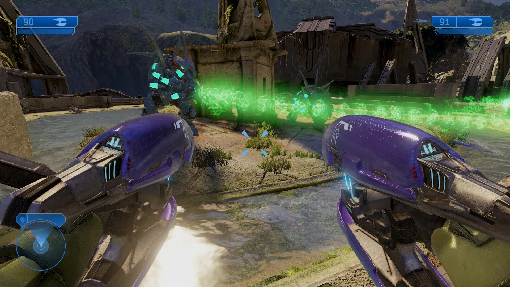
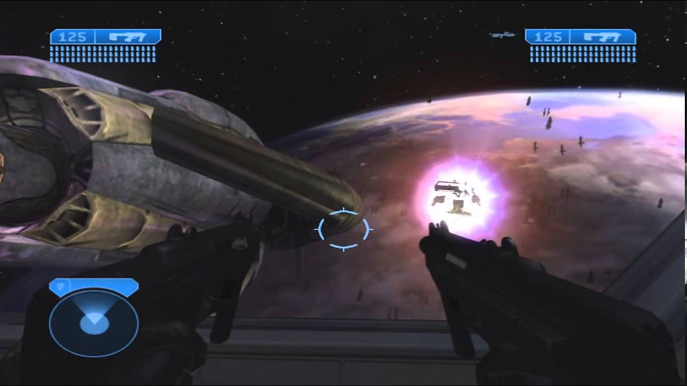
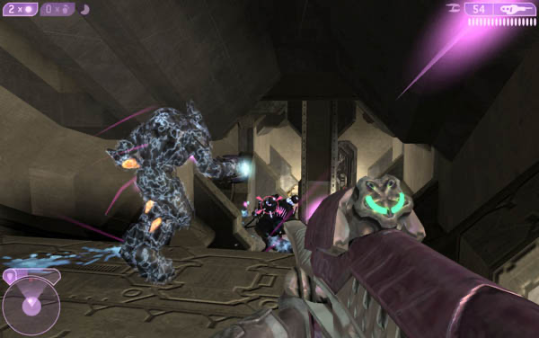
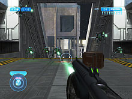
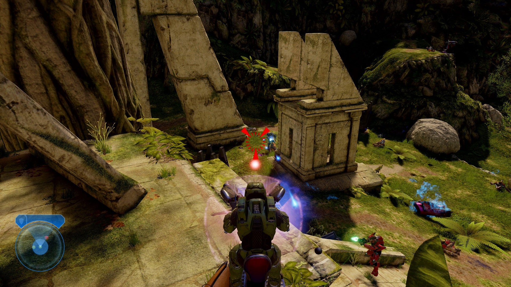

Ficha Táctica
Año de Lanzamiento: 2004
Desarrollador: Bungie
Consola: Xbox
Género: Disparos en primera persona (FPS)
Informe de Misión
La historia da inicio inmediatamente después de que el Jefe Maestro destruyera el primer anillo Halo. De manera imprevista, una pequeña flota del Covenant liderada por el Profeta del Pesar llega al sistema solar y lanza un ataque fulminante sobre la ciudad terrestre de Nueva Mombasa. El Jefe Maestro lidera las defensas en la Tierra y persigue a la nave insignia alienígena a través de un salto estelar, descubriendo un segundo anillo antiguo: la Instalación 05 (Delta Halo). La llegada de las fuerzas humanas desata una carrera contrarreloj para evitar que los líderes religiosos del Covenant inicien la activación de la red.
Paralelamente, el juego introduce una perspectiva revolucionaria al poner al jugador en las botas de Thel 'Vadam (El Inquisidor), un respetado comandante Sangheili (Elite) culpado por la destrucción del primer Halo. Condenado a cumplir misiones suicidas para los Profetas, el Inquisidor descubre gradualmente la manipulación teocrática tras la religión del "Gran Viaje". La traición de los Profetas al reemplazar a los Elites por los brutales Jiralhanae (Brutes) desencadena una sangrienta guerra civil dentro del Covenant (el Cisma Gran), obligando al Inquisidor a forjar una alianza histórica con la humanidad para detener el disparo del anillo.
Registro Visual





